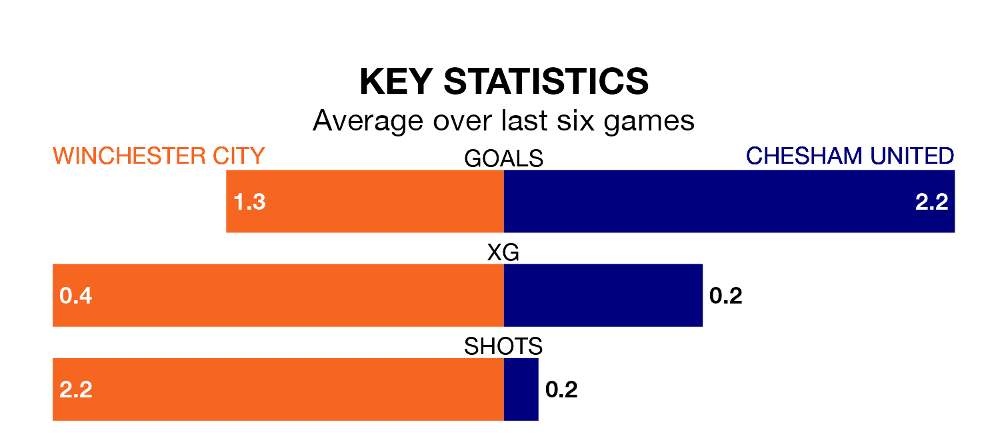

Chesham United are strong favourites to take all three points despite Winchester City's home advantage in Saturday's match at the Denplan City Ground.
*Betting Company* are offering odds of 1.67 on Chesham sealing the win, with the visitors sitting first in Southern League Premier South table.
Winchester, who are 12th in the league and 20 points behind Chesham, are priced at 4.1 to win. A draw is set at 4.1.
With 53 goals in 26 games so far this season, Chesham are scoring more than average in the league with 2.0 goals per game. And they are conceding fewer than average, letting in 30 goals at a rate of 1.2 per game.
Winchester, meanwhile, are average scorers, with 1.7 goals per game. They have also conceded 1.7 goals per game.
City are in mixed form in Southern League Premier South, with two wins and a draw from their last six games.
With five wins and a draw over that period, United's form is much better – they have taken 16 points from 18, compared to the hosts' seven.
In the last three years, Winchester and Chesham have played each other on three occasions. Winchester won one of them and they drew the other.
Their last meeting was on September 23, when Winchester won 2-1 away.
Winchester's last match was on Tuesday, a 2-1 win against Tiverton Town.
Chesham beat Walton and Hersham 3-0 last time out, on January 27.
Updated: 15:45 (UTC), 02/02/24